Segmentation is an important topic in computer graphics as it gives a kind of shape abstraction which helps geometric processing and human understanding of 3D shapes. Segmentation can provide fundamental information for geometric modeling, deformation, mesh simplification and skeleton extraction. In the past several years, many methods have been come up to mesh segmentation.
For a 2-manifold M(V,E,F), we’ll define a segmentation M’ as a set of sub-meshes of M. M’={M0,M1,…Mn}, where Mi=(Vi,Ei,Fi) and {Fi} is a partition of F to disjoint subsets. So it means we divide the mesh into smaller parts by the faces, and use faces to induce segmentation of the mesh. So one face would belong to unique sub-mesh and each edge would belong to one sub-mesh or two if it’s between two sub-meshes and each vertex might belong to one or multi sub-meshes. The basic elements we may consider will only be faces in the following.
As we’ll only consider face-partitioning, dual graph of the mesh is widely used. Faces are defined as dual vertices, and two dual vertices are adjacent if and only if the two original faces are adjacent, i.e. the common edge of two faces will flip to be the dual edge between two dual vertices.
Segmentation methods mainly involve two kinds of thinking to measure meshes, face-level and part-level. The use different kinds of information of objects and induce different kinds of partitions.
Face-level treats meshes as its 2D surface and uses features on faces to partition meshes into patches where each patch holds some common properties, e.g. curvature, normal, etc. And each patch must be topologically equivalent to a disk. Part-level adopts cognition method to split meshes into meaningful parts to humans. It treats meshes as 3D shape and analysis the shape in semantic parts, e.g. volume data, basic shapes like planes, cylinders, spheres, etc.
For each type, there are several standalone approaches of segmentation. Other than the view of the mesh, different kinds of approaches are only different techniques and can generate partitions for any measurement of meshes.
Clustering defines some function on the entire mesh and treat each triangle as an initial cluster, and then each time pick two adjacent clusters with some minimal error and merge them together get a new cluster until the amount of clusters is small enough. Fitting uses some primitive shapes like plane, sphere and cylinder to fit the mesh and partition the mesh into these kinds of shapes.
Hierarchical Face Clustering (HFC) is a a greedy algorithm to merge faces for best planarity. Each triangle represents an initial cluster. In each step, every two adjacent clusters are evaluated. A least square fitting plane is indicated by setting weighted coordinates of clusters as a point of the plane and weighted normals of clusters is the normal of the plane. Then use L2 normal to compute the bias error from the merged cluster to the fitting plane. The pair of clusters with minimal error is chosen to be merged together. This procedure can be run to one cluster left and form 2-binary tree recording the hierarchical result of the segmentation
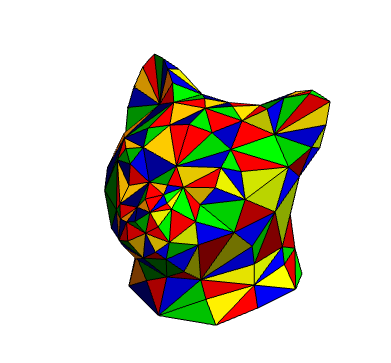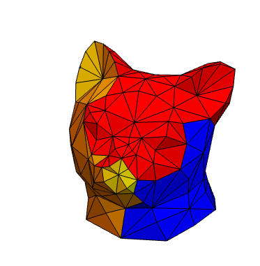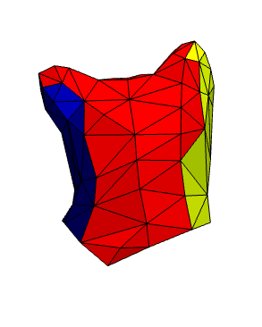fig1. This is an example for HFC, from left to right: input data, front view of 3 clusters, back view of 3 clusters
As HFC is a greedy algorithm and only consider local merging, the initial mistake may lead to a wired global segmentation cause clusters merged ahead wouldn't be separated later discarding recomputing boundary smoothness.
Hierarchical Fitting Primitives is an improvement of HFC. It extends fitting shapes from only planes to cylinder and spheres and make HFC a framework of clustering based on primitives fitting. In each iteration of HFC, just change computing the fitting planes to all primitives and use the minimal error between clusters and the primitives as the evaluation. This extension provides better precision for volume meshes.
This method uses global clustering on the dual graph of a meshes. For each dual edge connecting two dual vertices, i.e. two adjacent faces, the weight of the edge is given by the distance between the two faces. The distance is defined as a linear combination of the geodesic distance between two barycentrics and the dihedral angles. After each edge is defined, the distance between any two dual vertex is defined as the shortest path.
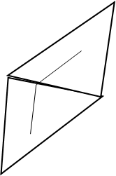fig2. Define distance between two faces by the geodesic distance
The idea of fuzzy clustering is to select some dual vertices to represent the clusters and make other vertices belong to its nearest represent with vertices near the boundary fuzzy. Then recompute the represents of each cluster and loop the procedure until finding stable represents.
At last use minimal edge cut to refine the boundaries between clusters.
For initial represents, vertices with longest distance to each other are chosen. The simplest case is to select the ends of the longest path in the dual graph.
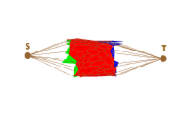fig3. Represents with longest distance.
The shortest path of the dual graph can be computed one time as it won't be changed in the clustering process. However computing shortest path between any two vertices using Floyd's algorithm costs O(n3) complexity and for large meshes it would slow down the whole program.
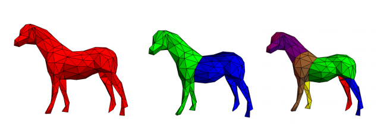fig.4 Segmentation of fuzzy clustering from left to right: input data, 1-iteration, 2-iteration
SDF replaces the radius function in medial axis transform. The core idea of SDF is measure the diameter of each part of the mesh and separate large and small part.
SDF is defined as following. For each vertex on the surface, ray cast several lines to its inward normal direction to the other side of the mesh, weight the length of acceptable rays as the sdf of this vertex.
Here using several lines is to overcome singular opposite surface and can fit for pose changes.
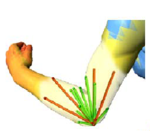fig5. Ray cast to the opposite side of mesh
Compute the sdf of each face's barycentric and collect all the values. Faces with similar sdf would be viewed as the same part. To separate the parts of the values, the histogram of sdf need to be decomposed.
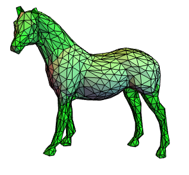 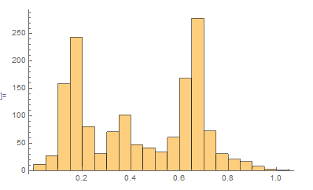fig6. SDF distribution of the mesh and SDFs normalizes to [0,1]
I adopted the K-means Algorithm to decompose the histogram. Iteratively compute the mean value of each group to separate the histogram into k groups.
And the decomposition of the histogram indicated the segmentation of the mesh.
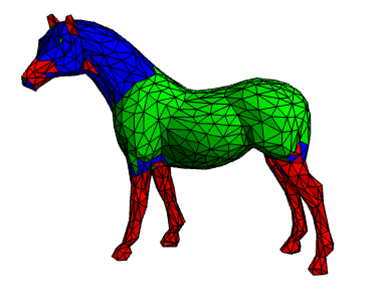fig7. SDF segementation without boundary refined.
If we take half length of SDF at each vertex to its inward normal direction, we can get point cloud near the medial axis. Curve extraction from the point could can lead to the skeleton of the mesh.
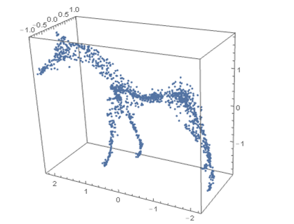fig8. point cloud near medial axis
I studied and implement some segmentation methods. However I need to construct the entire feeling about segmentation and skeleton extraction. Not many skeleton extraction theories have been studied in this project. So I'd like to think deeper and study further about these topics, rather than only spend too much time on implement. Still, try to find some interesting relationship between segmentation and skeletons.